1. What is FreeCAD?
FreeCAD is a free, open-source parametric 3D CAD (Computer-Aided Design) modeler. It's great for designing mechanical parts, architecture, or even 3D printing models. It runs on Windows, macOS, and Linux.
To get started:
- Download and install FreeCAD from the official website: freecad.org.
- Launch the application. You'll see a welcome screen with options to create a new document or open existing ones.
Note: FreeCAD has a modular structure with "workbenches" for different kinds of modelling. We'll dive into that soon.
2. Creating a New Document
Once FreeCAD is open:
- Go to File > New or click the "New" icon in the toolbar (it looks like a blank page).
- This creates a new, empty document. You'll see a 3D viewport in the center, a Combo View panel on the left (with Model and Tasks tabs), and various toolbars at the top.
- Save your document early: File > Save As and choose a location with the .FCStd extension.
Pro Tip: FreeCAD documents are self-contained files that store all your models, sketches, and data.
3. Workbenches: Focusing on Part Design
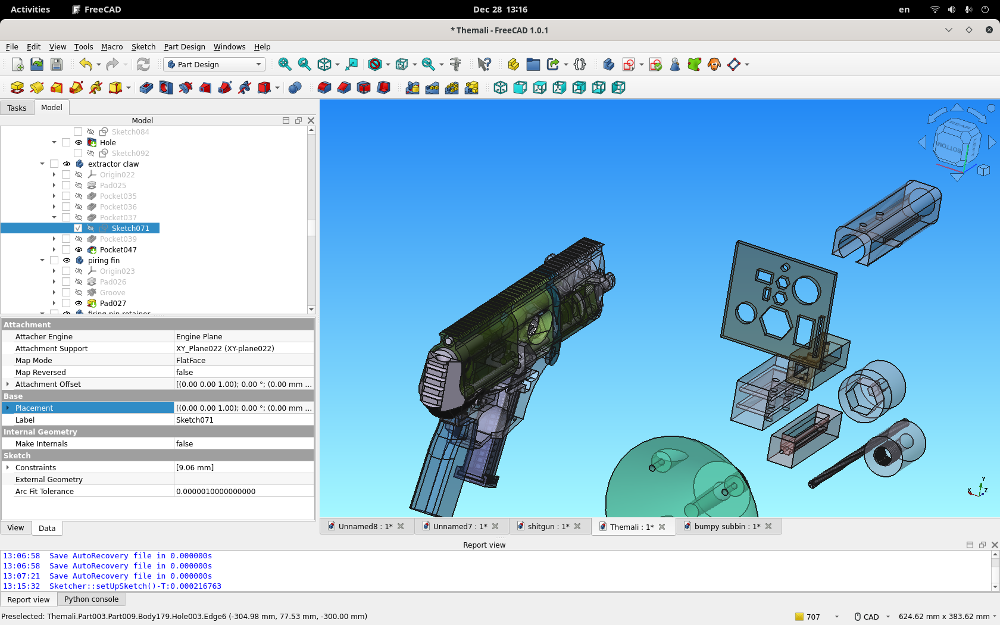FreeCAD uses "workbenches" to group tools for specific workflows. The default is the Start workbench, but for modeling, we'll switch to others.
- To switch workbenches: Use the dropdown menu at the top (next to the toolbar icons) or go to View > Workbench.
- Select Part Design for creating solid parts using sketches and features. This is ideal for beginners in mechanical design.
- Other useful workbenches:
- Sketcher: Often used within Part Design for 2D sketching.
- Part: For basic geometric shapes without parametric history.
- Draft: For 2D drafting and simple shapes.
- TechDraw: For creating technical drawings from your 3D models.
Switch back and forth as needed—tools from one workbench might be available in others.
4. Aside: Understanding Tasks and Task Locking
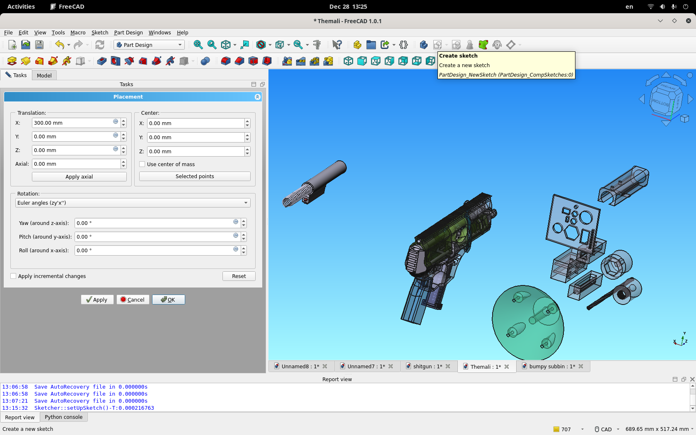In FreeCAD, many operations open a "Task" panel on the left (in the Combo View). This is where you input parameters, like dimensions or options. In the example screenshot, you see that "create sketch" is grayed out from the top panel of the screen, because the "placement" task is active in the left "tasks" panel.
- Tasks: These are modal dialogs that guide you through a process. For example, when creating a sketch, the Task panel shows constraints and tools.
- Task Locking: While a task is active, some other actions are locked to prevent conflicts. To exit a task, click "Close" or "OK" in the panel, or press Esc.
- If things feel stuck, check if a task is open—it's a common beginner hurdle!
Remember: FreeCAD is parametric, meaning changes to early steps (like sketches) propagate to later features. This is powerful but requires careful planning.
5. Introduction to Sketches
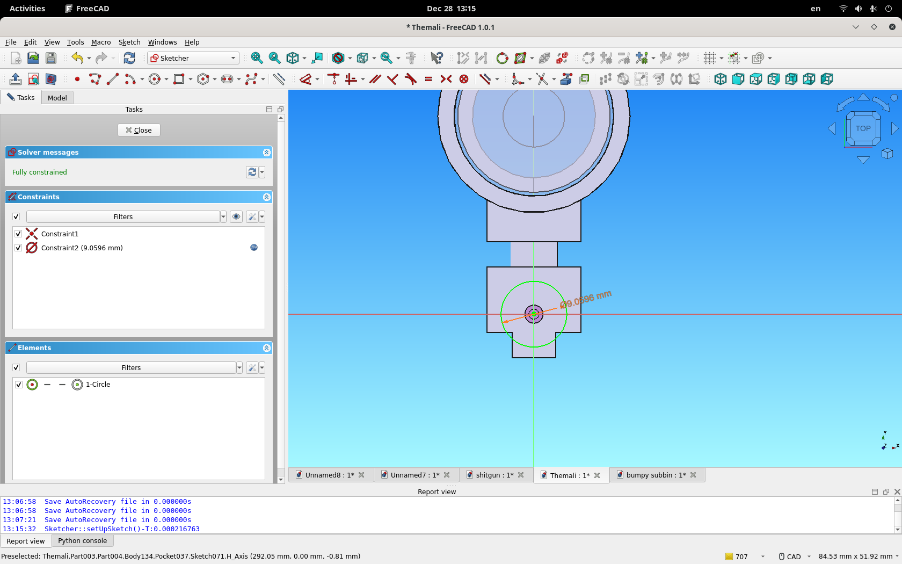Sketches are the foundation of parametric modeling in FreeCAD. They're 2D drawings used to define 3D features.
The example sketch shows a couple of example features worth noting. There is a green circle (meaning "the circle is fully constrained, and couldn't be resized or repositioned because of the constraints that define its' size and position), with the center at the two lines in the middle of every sketch. Think of these two lines as "the zero lines" on a cartesian number chart, the same as you learned to chart a graph with at school. The point where the lines cross is "the middle" of the sketch, and if you use the placement operations outside of the sketch, any rotations of it will rotate around that middle. On the left side, you can see every "element" of the sketch, including a list of "Constraints" in red (with two constraints, one defining the center of the circle as being the same point as the center of the document, and another constraining the size of that circle). Beneath the constraints, there is a section of "Construction" ("actually constructed geometry") and "Reference" geometry ("logical geometry that is not constructed, such as lines along which actual constructed features are placed").
- In Part Design workbench, click Create Body (if not already done—bodies organize features).
- Then, click Create Sketch. Choose a plane (e.g., XY-plane) to sketch on.
- In Sketcher mode:
- Draw shapes using tools like Line, Circle, Rectangle.
- Construction Geometry: Toggle with the blue icon— these are helper lines (dashed) that aren't part of the final shape but aid in positioning.
- Reference Geometry: Similar to construction, but often refers to external elements like axes or points from other objects.
- Constraints: These define relationships. Use Horizontal/Vertical for alignment, Coincident for points to touch, Dimensional for lengths/angles. Fully constrain your sketch (turns green) to make it parametric and stable.
- Close the sketch when done.
Example: Sketch a rectangle, add dimensional constraints (e.g., width=50mm, height=30mm), and ensure it's fully constrained.
6. Part Design Operations Based on Sketches
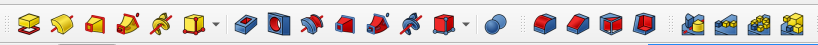Once you have a sketch, apply 3D operations:
- Pad: Extrude the sketch into a solid (e.g., turn a rectangle into a box).
- Pocket: Cut out material based on the sketch.
- Revolve: Rotate the sketch around an axis to create cylindrical shapes.
- Groove: Like pocket but revolved.
- Logic: Mirror for symmetry, arrange rows of identical operations in sequence, arrange operations in a circle, or across other geomtric progressions.
- Dressing Operations: chamfers and radiuses in freecad are treated as a "dressing" like an icing to a cake, that depend on a cake underneath. Because of this dependence, they tend to create conflicting behaviors that new users find unpredictable.
These build a "feature tree" in the Model tab—double-click to edit any step.
7. Placement Editor and Function Editing Tools
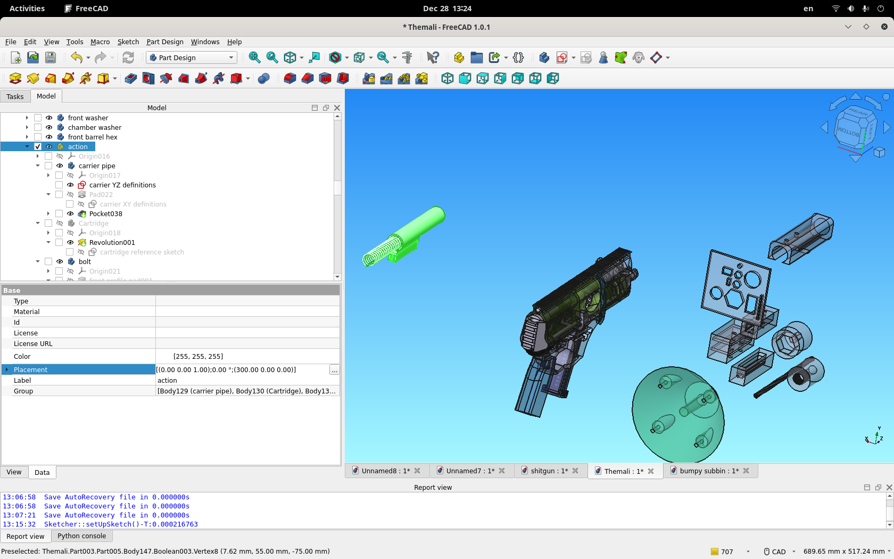To position objects precisely:
- Placement Editor: Select an object (sketch, body, or feature) in the Model tree. In the Property View (bottom of Combo View), under "Placement," click the ellipsis (...) to open the editor.
- Adjust Position (X,Y,Z) and Rotation (Axis and Angle, or Euler angles).
- Use for moving sketches or bodies relative to each other.
- Function Editing Tools: For advanced relations, use expressions. In properties, click the blue "f(x)" icon next to a value.
- Once you click this, you are presented with a text box, allowing you to link to other parameters or do arithmetic operations on data from them, e.g., set a sketch dimension to "Body001.Pad.Length / 2".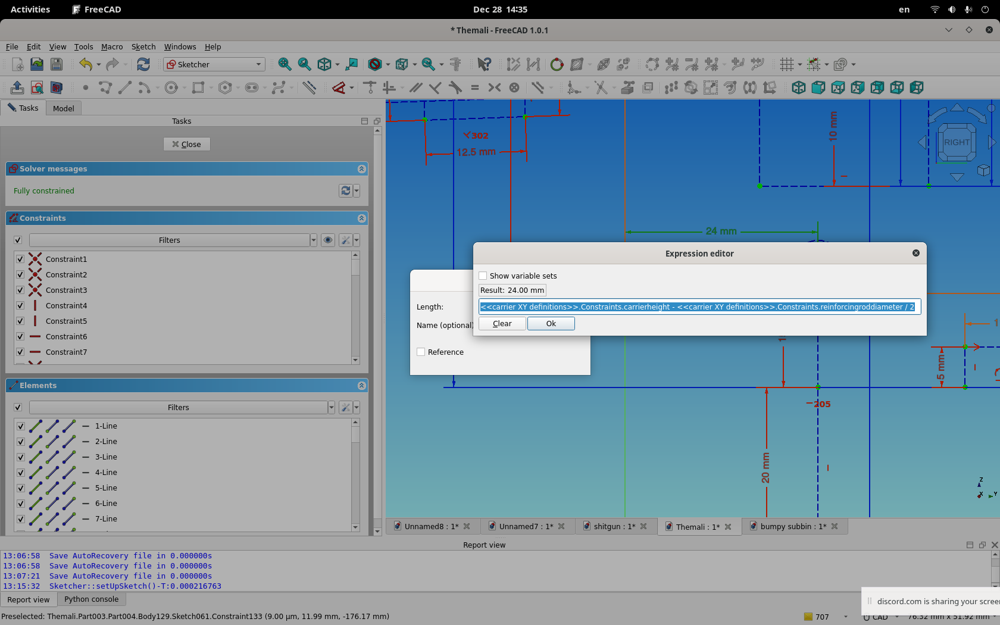
- This creates dependencies between objects.
To arrange sketches/bodies: Create attachments (e.g., attach a sketch to a face of another body) or use placements to align them. For multi-body designs, use Assembly workbench (if installed) for more complex relations.
Next Steps: Tuning your Wamali
With these basics, you're ready to explore your specific Wamali document. Open it, switch to Part Design, inspect the Model tree, edit sketches, and adjust placements as needed. you SHOULD be able to safely move the "Part" bodies, which have a yellow staircase icon- but if you move individual sketches, especially in "parent" geometry that derivitive operations are based on, be prepared to see CAD model errors!
Step 8: Tuning your Wamali FILE
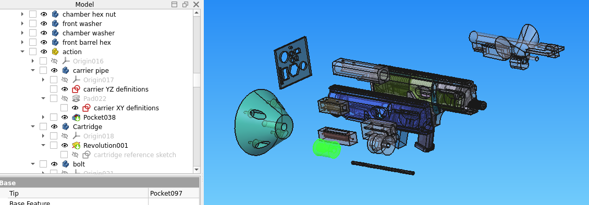The whole point is to make your personal wamali fit your personal hardware store. To that end, there is a "fitment jig" model, in the top center of this image with many smaller circular and hexagonal and etc holes cut out of it. This is used to match what you are attempting to print, with what you can source from the hardware store.
There are two "Sketches" that define all of the derived attributes of the Wamali. (OK, there's sort of 3.) The two you primarily need to be concerned with, at this stage in the Alpha process, are "Carrier XY definitions" and "Carrier YZ Definitions", in the "carrier pipe" body in the "action" assembly.
the "Carrier XY" defines "the size and relationship of everything in the gun, as viewed from the front."
the "Carrier YZ" defines "the size and relationship of everything in the gun, as viewed from the top."
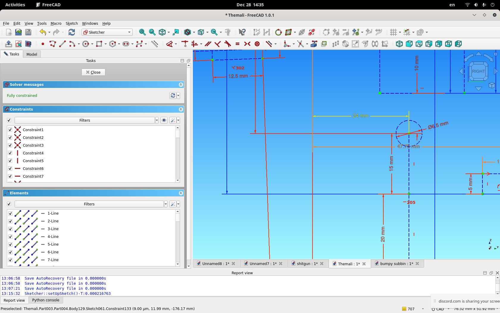 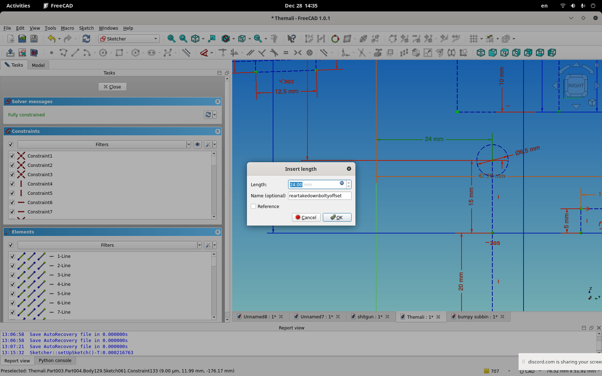It's important to note that in these sketches, almost all of the geometry is "reference" geometry- dotted blue lines by default- and there are ALSO "reference constraints", which appear blue by default in FreeCAD, as well as "functional constraints", constraints derived by logic, which appear orange. For the constraints you want to interact with, they are almost always the ones in RED, containing a number measurement and a name when you double click them to open them.
IF YOU END UP HERE REPEATEDLY, KEEP A NOTEPAD THAT RECORDS WHAT YOU'VE TRIED AND HOW IT WORKED.
Step 9: Tuning your Wamali PRINTS- STAGE 1
Printing the Wamali is intended to be extremely easy. it breaks into lego segments that all have a specific job (don't combine them into single monolith printed bodies, generally, although with the occasional exception possible)
(pardon the old graphics from a prior test print of the wamali being used to demonstrate suitable orientations!)
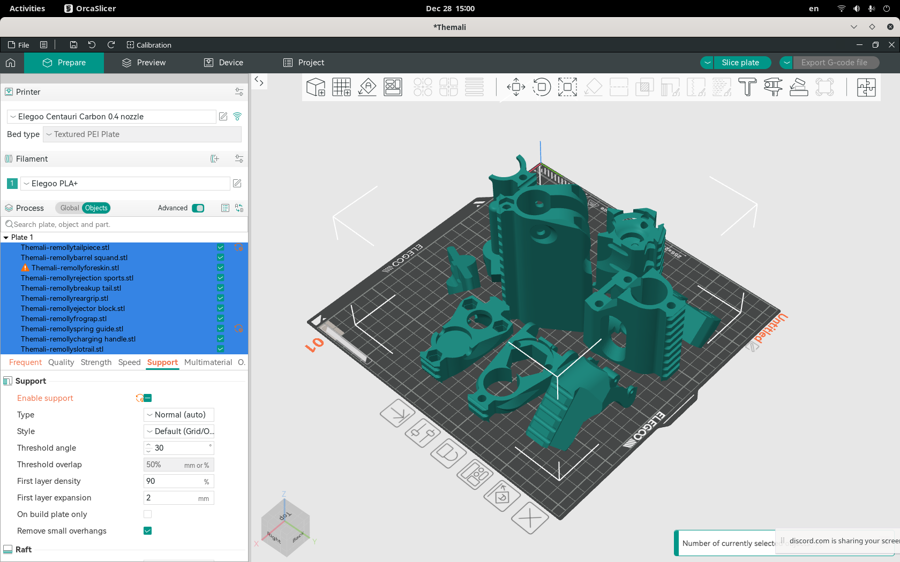Obviously, most things are simply put on a flat face and their lengths are printed up as a solid vertical structure that shape. In a couple visible exceptions (the tail piece, the spring guide, etc) there are different considerations. in the tail piece, the layer lines going at 45 degrees are intended to add an additional degree of reinforcement, attaching the upper to the lower with the greatest possible strength orientation. (there's also hole, so a single wood screw- sunk in from the top, as you'd hold the gun- holds all these layers together after printing, at the rear of the gun.)
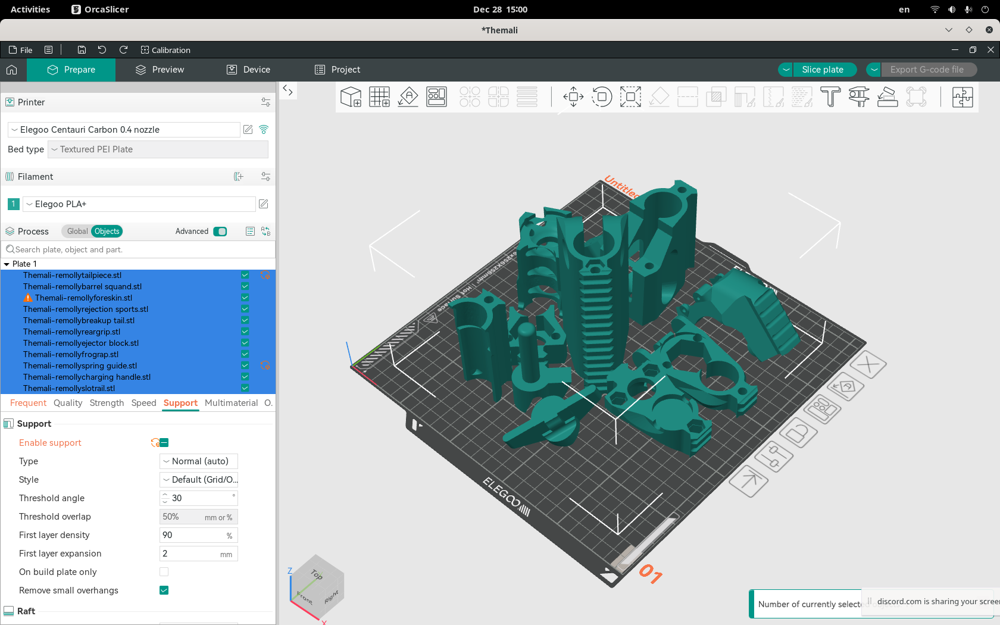 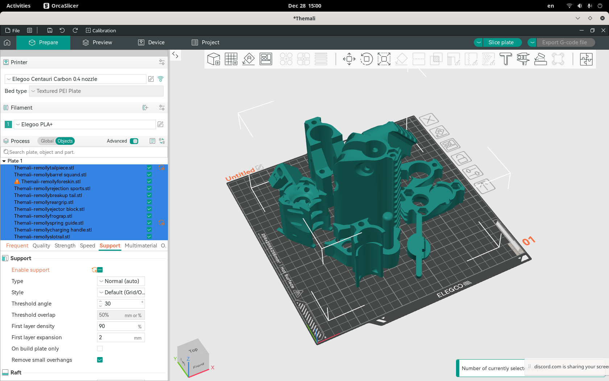 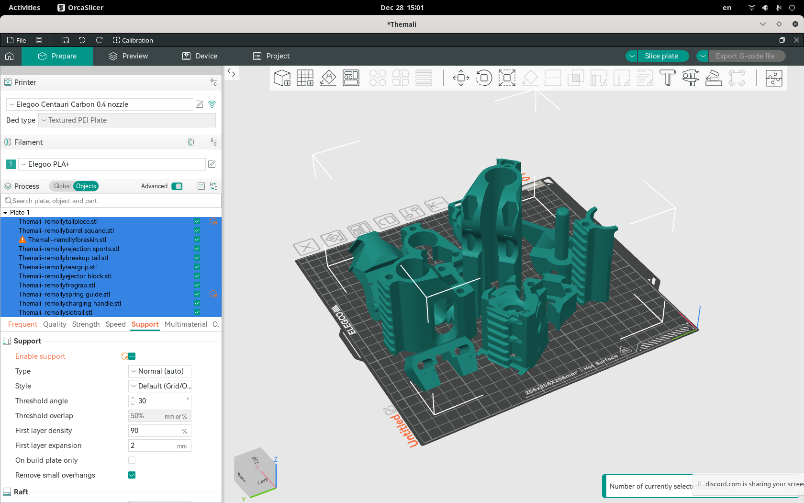This particular shot shows the spring guide the most clearly: this is the "print preview" view, showing the orientation, but not showing the supports that should be under it during printing. Also note, the ejector block in this print preview is oriented on one of the flat faces that still gives it full circumferencial strength, but not the normal intended orientation as intended-which is flat on its' back, with some stringing accepted in the bridging in its' interior cavities.
Next Steps: Barrel Making
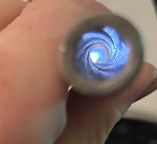This is essentially "conventional barrel making". Given the difficulty of this task, it has discouraged many people from trying, however the premise is simple: Barrels are conventionally drilled by rotating the barrel around the hole you want to drill through it. Once you understand this premise, you understand that, if you could attach the barrel to the drill, you could center the drill point on the only center it turned around the axis of- the hole you want to drill (or, rather, before that hole exists, the axis of alignment along which the bar you intend to drill spins).